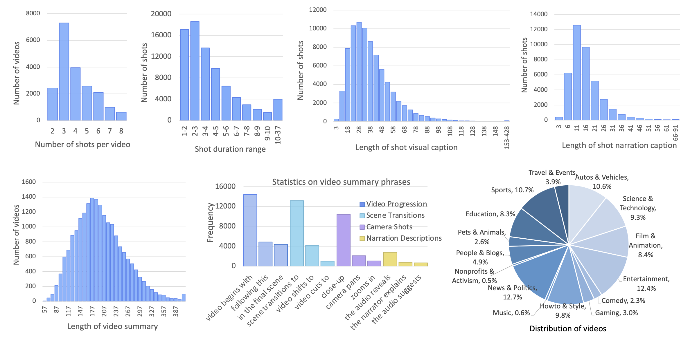
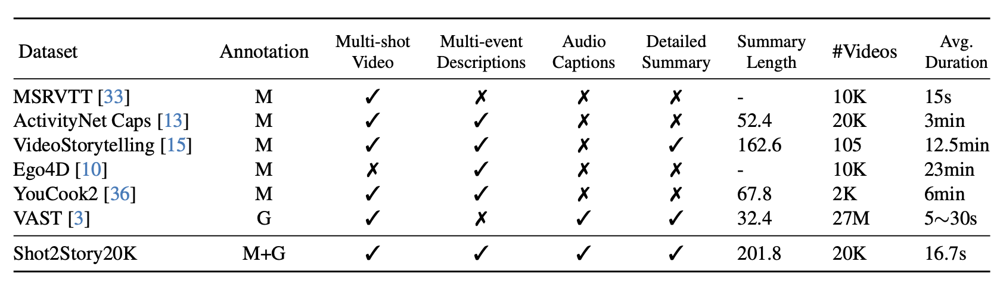
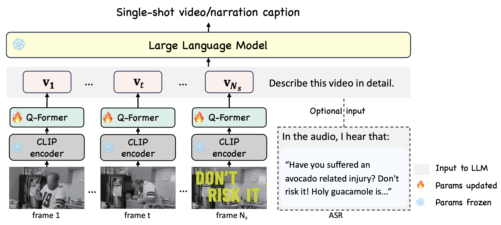
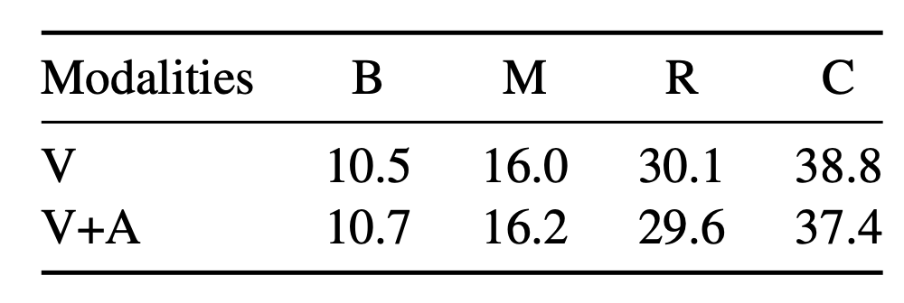
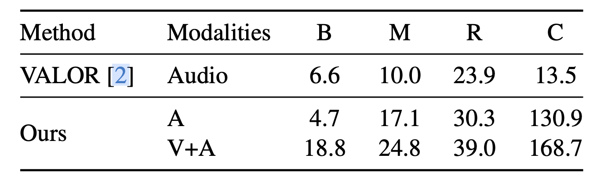
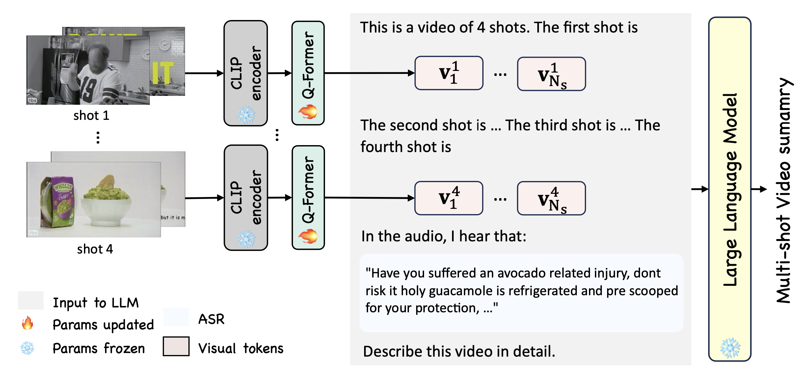
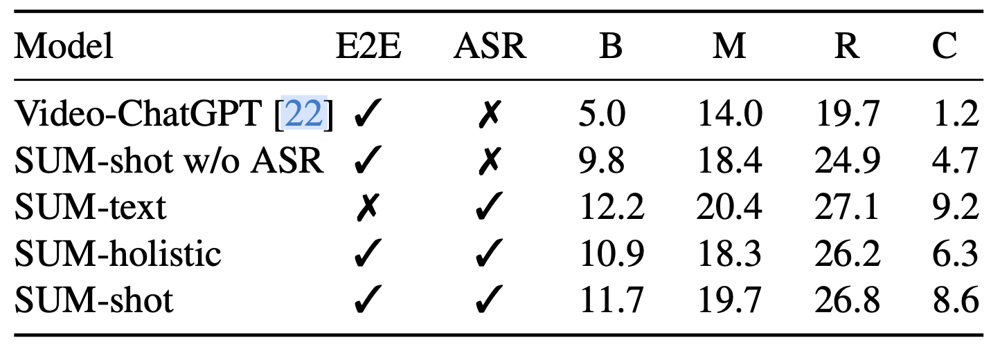

A short clip of video may contain progression of multiple events and an interesting story line. A human needs to capture both the event in every shot and associate them together to understand the story behind it.
In this work, we present a new multi-shot video understanding benchmark Shot2Story with detailed shot-level captions and comprehensive video summaries. To facilitate better semantic understanding of videos, we provide captions for both visual signals and human narrations. We design several distinct tasks including single-shot video and narration captioning, multi-shot video summarization, and video retrieval with shot descriptions.
Preliminary experiments show some challenges to generate a long and comprehensive video summary. Nevertheless, the generated imperfect summaries can already significantly boost the performance of existing video understanding tasks such as video question-answering, promoting an underexplored setting of video understanding with detailed summaries.
We provide 20k videos with diverse topics and contents. Each video is annotated with shot-level captions and comprehensive video summaries. To facilitate better semantic understanding of videos, we provide captions for both visual signals and human narrations.
The dataset includes an average of 4.0 shots per video, resulting in a total of 80k video shots, each with detailed video caption and narration caption annotations. The average length of our video summaries is 201.8, while the average length of a video is 16s.
For more comprehensive details, please refer to the plots below.
High level comparison of our dataset to previous ones. The summary length of ActivityNet and YouCook2 are their combined length of captions in one video. M and G stands for manual and generated, respectively.
We experiment on tasks like single-shot video captioning, narration captioning, video summarization, video shot retrieval and video question-answering. Papers and codes are on the way. Please check for updates!
For each single video shot, we experiment on single-shot video captioning and narration captioning. Model structure is shown below. Visual tokens from the CLIP visual backbone and Q-Former (together with a linear layer from MiniGPT4), along with text prompts, form the input to the Vicuna. ASR input is optional for single-shot video captioning.
For video captioniong, we try visual singals and visual-audio signals as input. See the results below.
For narration captioniong, we show the results of ASR texts only and our visual-audio model below, which shows the importance of incorporating visual signals.
Multi-shot video summarization is a new task that is distinct from existing video description tasks. It requires the model to understand the shot structure of the given video and to provide a coherently paragraph to describe the progression of events in the different shots.
We propose SUM-shot model, as a powerful baseline for multi-shot video analysis. We sample 4 frames in each video shot and prompting the LLM with frame tokens from different shots, as shown below.
We experiment with different models, such as the Video-ChatGPT, SUM-shot holistic (which doesn't have shot information), SUM-text (two-stage approach with LLM tuned) and SUM-shot w/o ASR (which doesn't ASR text as input). Experiment shows that shot information and ASR information are crucial to multi-shot video summarization. Moreover, the task poses a challenge for better training scheme, as indicated by superior performance of SUM-text.

@article{han2023shot2story20k,
title={Shot2Story20K: A New Benchmark for Comprehensive Understanding of Multi-shot Videos},
author={Mingfei Han and Linjie Yang and Xiaojun Chang and Heng Wang},
journal={arXiv preprint arXiv:2311.17043},
year={2023}
}